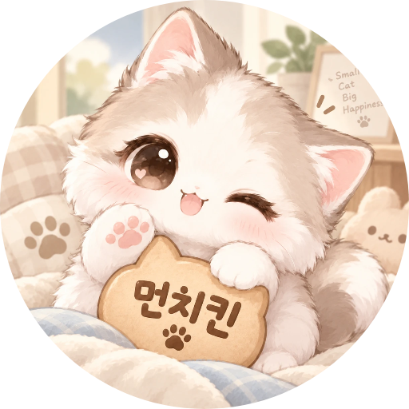
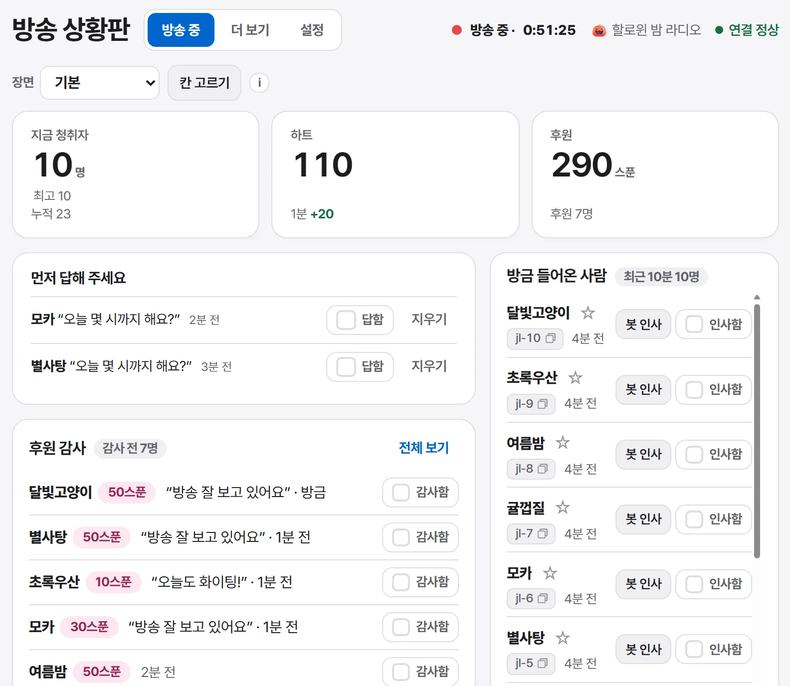
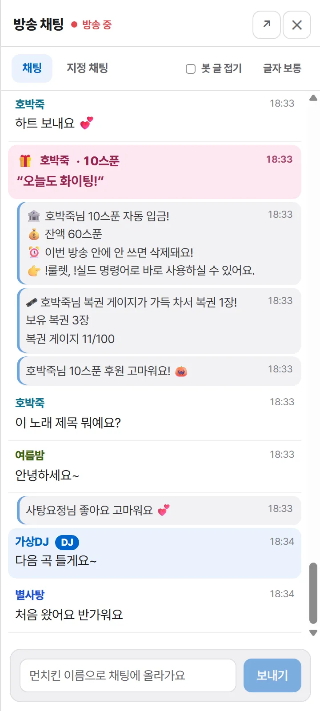
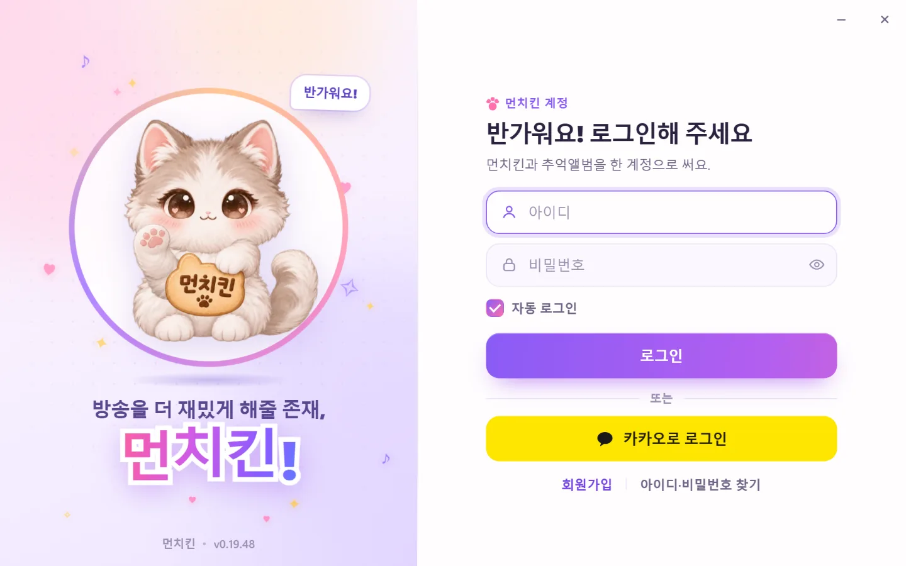
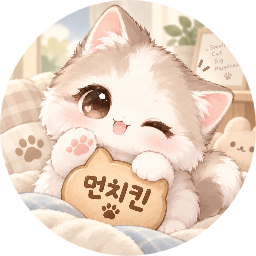

스푼 DJ를 위한 PC 채팅 봇 방송을 더 재밌게
해줄 존재,
먼치킨!
스푼 방송에 매니저로 들어와 입장 인사, 후원 감사, 채팅 게임을 대신해 주는 Windows PC 프로그램이에요.
먼치킨은 Windows PC 프로그램이에요
이 기기에는 설치할 수 없어요. PC에서 먼치킨.com을 열어 받아 주세요. 주소를 보내 두면 PC에서 바로 열 수 있어요.
먼치킨 0.20.2 · Windows 10·11 (64비트) · 153MB · 무료 베타
받을 때 경고가 나와도 괜찮아요. 엣지에서 「일반적으로 다운로드되지 않습니다」가 나오면 이 순서로 눌러요.
- ···
- 유지
- 더 보기
- 그래도 계속
2026년 12월 31일까지 무료예요. 먼치킨만 쓰면 신청하지 않아도 돼요.2027년부터는 유료로 바뀔 예정이에요. 자세한 내용은 먼치킨과 디스코드로 알려 드려요.

먼치킨이 방송에서 하는 일
PC에 켜 두면 스푼 방송 채팅에 들어와 이런 일을 대신해요.


실제 먼치킨 화면이에요. 닉네임은 모두 지어낸 예시예요.
입장 인사와 후원 감사
들어온 청취자 이름을 불러 인사하고, 후원에는 고맙다고 말해요.
자동 인사, 후원 감사
채팅 미니게임
초성퀴즈, 업다운, 가위바위보를 채팅으로 하고 DJ가 고른 보상을 받아요.
미니게임, 팀대항전
우리만의 DJ 키우기
청취자마다 DJ 캐릭터를 키우고, 모은 냥으로 옷을 입혀요.
캐릭터, 옷장, 레벨
신청곡과 감사 목록
신청곡을 순서대로 모으고, 아직 인사하지 못한 후원자를 챙겨요.
신청곡 대기열, 감사 목록
방송 상황판
청취자, 하트, 후원을 한 화면에서 보고, 이름을 누르면 청취자 카드가 열려요.
상황판, 청취자 카드
휴대폰 방송도 함께
PC에 먼치킨을 켜 두면 휴대폰 방송에서도 일해요. 효과음과 TTS는 PC에서 나와요.
Windows, 휴대폰 방송
오늘 방송부터 함께해요
설치 안내 자세히 보기- 1
받고, 로그인하기
Windows PC에 먼치킨을 설치하고 먼치킨 계정으로 로그인해요.
- 2
스푼 연결하기
스푼 DJ 계정으로 연결해 먼치킨이 내 방송을 돕도록 허용해요.
- 3빠뜨리지 마세요
꼭 매니저로 지정하기
먼치킨이 제대로 일하려면 꼭 매니저여야 해요. 매니저가 아니면 입장 인사가 늦거나 빠지고, 팔로우 감사는 나가지 않아요.
- 청취자 목록
- 먼치킨
- 매니저 지정
방송이 끝나면 고정 매니저로 두세요.
받을 때 경고가 나와도 놀라지 마세요
먼치킨.com의 받기 단추로 받은 파일만 이렇게 열어 주세요. 파일 이름은 Munchkin-Setup으로 시작해요. 다른 곳에서 받은 파일은 열지 마세요.
PC에서 받을 때 보는 그림 안내예요. 제목을 누르면 펼쳐져요.
엣지에서 받을 때
윈도우 기본 브라우저
받기 단추를 누르면 엣지 오른쪽 위에 다운로드 창이 떠요. 창이 사라졌다면 키보드에서 Ctrl + J를 누르면 다시 열려요.
-
다운로드 ···Munchkin-Setup-0.20.2.exe일반적으로 다운로드되지 않습니다. 열기 전에 신뢰할 수 있는지 확인하세요.···
파일 옆 "···"(더 보기)을 눌러요휴지통 단추는 누르지 마세요. 파일이 지워져요.
-
Munchkin-Setup-0.20.2.exe일반적으로 다운로드되지 않습니다.···
메뉴에서 "유지"를 눌러요"파일을 남겨 둔다"는 뜻이에요.
-
열기 전에 이 파일을 신뢰할 수 있는지 확인하세요
Microsoft Defender SmartScreen은 이 파일이 안전한지 확인할 수 없습니다.
삭제취소더 보기창 아래 "더 보기"를 눌러요파란 "삭제" 단추는 누르지 마세요.
-
열기 전에 이 파일을 신뢰할 수 있는지 확인하세요
삭제취소더 보기 그래도 계속"그래도 계속"을 눌러요이제 파일이 PC에 저장돼요.
-
다운로드 ···Munchkin-Setup-0.20.2.exe파일 열기
"파일 열기"를 눌러요다운로드 폴더에서 파일을 두 번 눌러도 돼요. 다음은 아래 윈도우 파란 창이에요.
설치 파일을 열 때
윈도우 파란 창
파일을 열면 윈도우가 파란 창을 한 번 더 띄울 수 있어요. 크롬으로 받았을 때도 같아요.
-
Windows의 PC 보호
Microsoft Defender SmartScreen에서 인식할 수 없는 앱의 시작을 차단했습니다. 이 앱을 실행하면 PC가 위험에 노출될 수 있습니다.
추가 정보실행 안 함글 아래 "추가 정보"를 눌러요처음에는 "실행" 단추가 안 보여요. "추가 정보"를 눌러야 나와요.
-
Windows의 PC 보호
- 앱:
- Munchkin-Setup-0.20.2.exe
- 게시자:
- 알 수 없는 게시자
실행실행 안 함"실행"을 누르면 설치가 이어져요"알 수 없는 게시자"는 서명이 없다는 뜻이에요. 앱 이름이 Munchkin-Setup인지만 확인해 주세요.
설치가 끝나면 먼치킨을 켜서 "스푼 연결"을 눌러 주세요. 이 창들은 처음 한 번만 나와요. 새 버전은 먼치킨이 켜질 때 저절로 업데이트돼요.
크롬으로 받을 때
오른쪽 위 다운로드 단추를 누르면 받은 파일 목록이 보여요. 먼치킨 파일 옆에 경고가 붙어 있으면, 그 파일을 눌러 받기를 이어 가는 단추를 눌러 주세요. 그다음은 위 "설치 파일을 열 때"와 같아요.
그림은 실제 창을 간단히 옮겨 그린 거예요. 엣지와 윈도우 버전에 따라 글자나 단추 모양이 조금 다를 수 있어요.

먼치킨 계정 하나로
먼치킨을 켜면 귀여운 캐릭터가 반겨요. 한 번 로그인하면 다음부터 자동으로 이어져요.
- 아이디로 가입하거나 카카오로 간편하게
- 먼치킨과 먼치킨 송출을 같은 계정으로
- 나만의 추억앨범까지 계정 하나로
가입은 먼치킨을 켜면 이 화면에서 바로 할 수 있어요.
웹에서 먼저 가입하기추억앨범
지금은 베타 테스트 중이에요. 다른 DJ분들께는 추후 공개할 예정이에요.
내 박제판, 최초 박제판, 방송 추억이 모이는 나만의 작은 사이트를 준비하고 있어요.
내이름.먼치킨.com
최초 박제판에 이름이 적히면 저절로 올라가요. 청취자는 하트와 댓글, 답글로 마음을 남겨요. 예시 앨범(한이준 추억앨범)에서 어떤 모습인지 먼저 볼 수 있어요.
한이준 추억앨범 미리 보기(새 창)밤톨.먼치킨.com

밤톨의 추억앨범
함께 웃었던 순간을 모아요.
함께한 순간최초 박제판
고마워요방송 추억
반짝인 우리내 박제판
지어낸 이름과 내용으로 만든 화면 예시예요.
자주 묻는 질문
지금 무료로 쓸 수 있나요?
먼치킨은 2026년 12월 31일까지 무료예요. 먼치킨만 쓰는 분은 신청하지 않아도 돼요. 추억앨범은 베타 테스트 중이며 다른 DJ분들께는 추후 공개할 예정이에요.
2027년부터는 어떻게 되나요?
2027년부터는 유료로 바뀔 예정이에요. 값과 신청 방법은 정해지면 먼치킨 프로그램과 먼치킨 디스코드(새 창)에서 미리 알려 드려요. 그전까지는 지금처럼 쓰면 돼요.
휴대폰으로 방송해도 되나요?
네. Windows PC에 먼치킨을 켜 두면 휴대폰 방송에서도 인사, 게임, 통장이 움직여요. 효과음과 TTS는 PC에서 나와요.
PC를 꺼도 먼치킨이 일하나요?
먼치킨은 DJ의 PC에서 움직여요. 방송할 때 PC와 먼치킨을 함께 켜 두세요.
추억앨범은 지금 신청할 수 있나요?
아직은 베타 테스트 중이라 다른 DJ분들의 신청은 받지 않아요. 추후 공개할 예정이에요. 한이준 추억앨범(새 창)에서 어떤 모습인지 먼저 만나 보세요.
새 버전은 어떻게 받나요?
먼치킨을 켜면 새 버전으로 저절로 업데이트해요. 공지와 자세한 업데이트 소식은 먼치킨 디스코드(새 창)에서 만나요.
다음 방송, 먼치킨과 함께할까요?
먼치킨은 Windows PC 프로그램이에요
이 기기에는 설치할 수 없어요. PC에서 먼치킨.com을 열어 받아 주세요.
Windows 10, 11 PC에서 2026년 12월 31일까지 무료로 써요. 따로 신청하지 않아도 돼요.